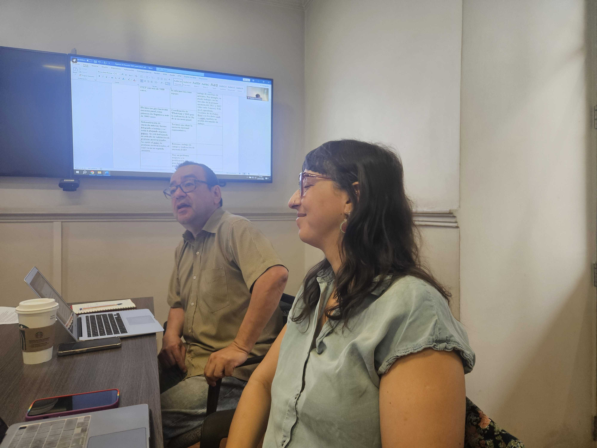
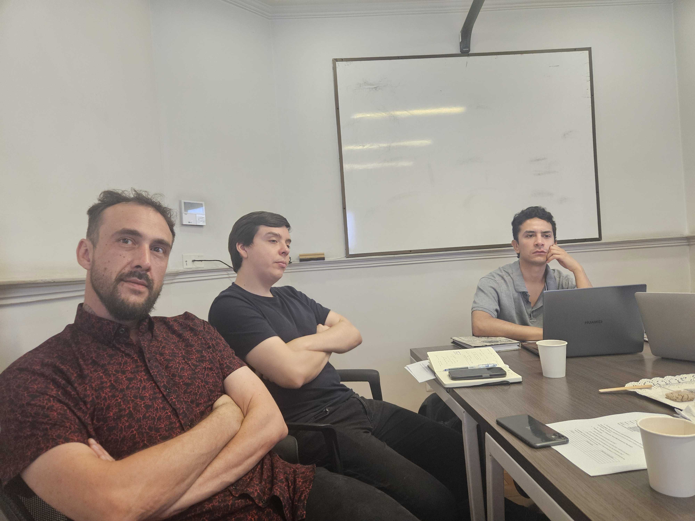
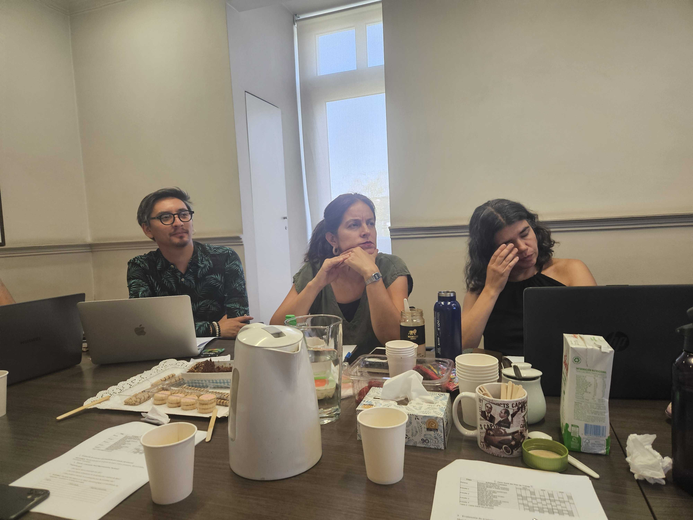
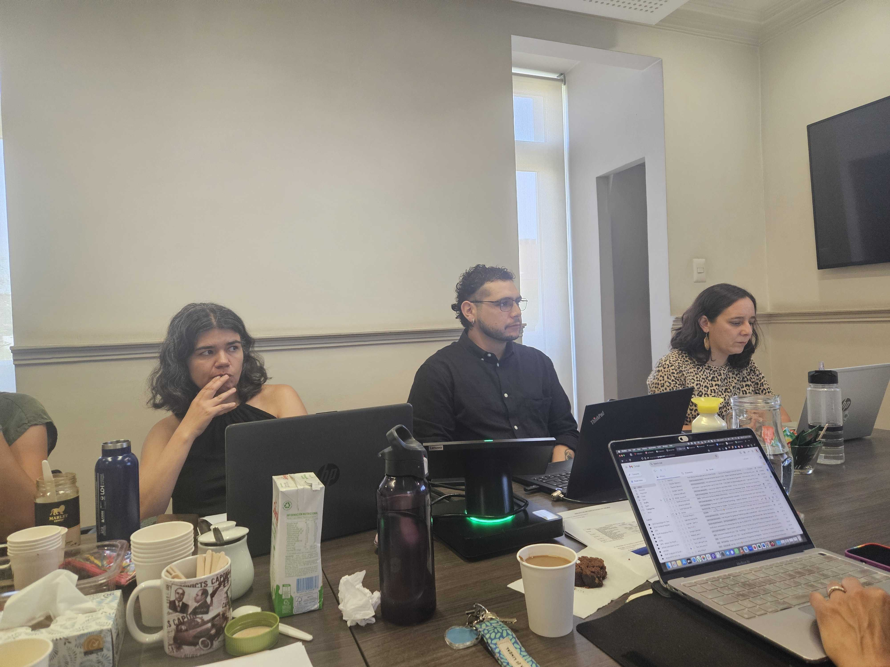
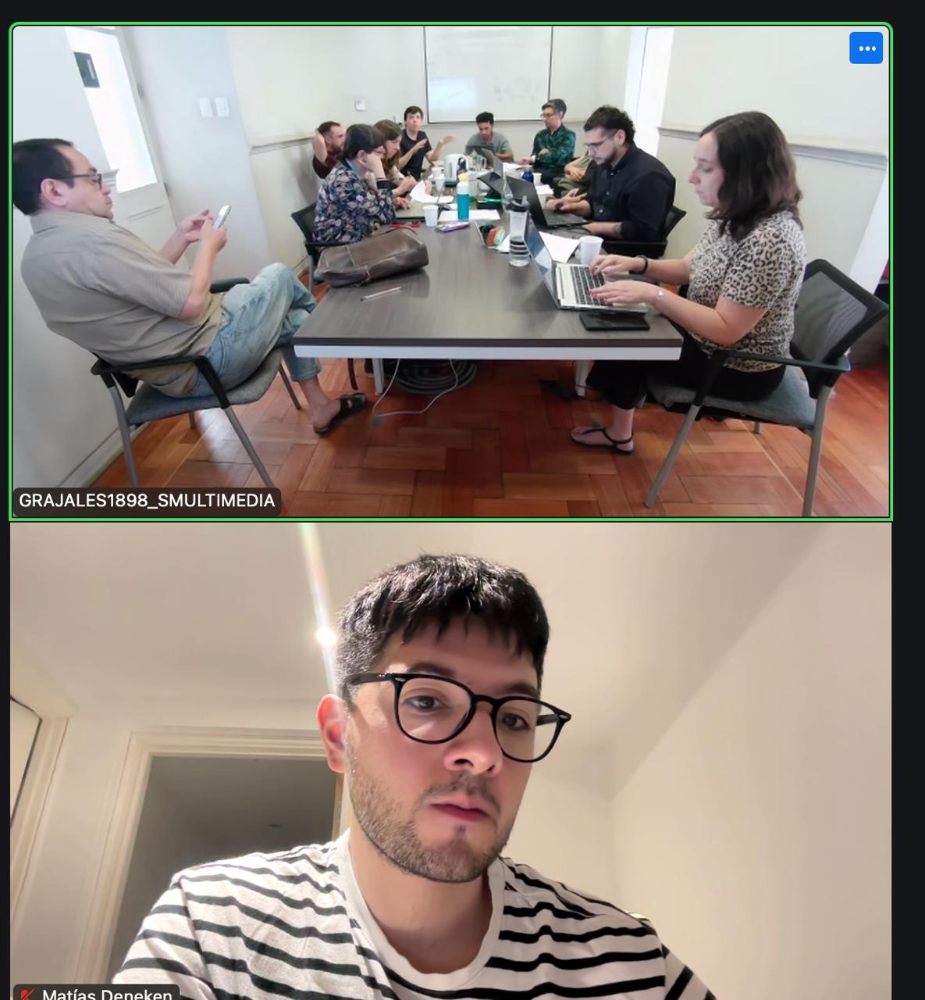

El 27 de enero de 2025 el equipo de investigación del Observatorio de Violencia y Legitimidad social (OLES) se reunió en la Universidad Diego Portales a realizar un balance del 2024 y proyecciones para el 2025.
Al día de hoy, las diferentes líneas de OLES han levantado valiosa información. Entre ellos, se encuentra en curso el Estudio Longitudinal de Percepciones de Seguridad y Policía, entrevistas y grupos focales cualitativos, documentos institucionales e información de prensa recogida de diferentes portales de noticias mediante la técnica de WebScrapping.
La reunión finalizó con una serie de proyecciones de cara al 2025, con miras a publicaciones científicas y vinculación con el medio.
Te invitamos a revisar nuestra publicación en redes sociales (Ver noticia).
   
